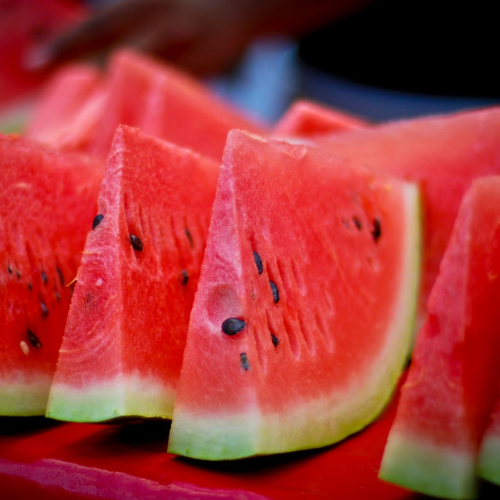
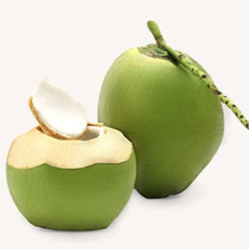

 Dưa hấu miền nam Định nghĩa thức ăn tính nóng hay mát Rất mát Thức ăn tính nóng và tính mát có nghĩa là mỗi loại thức ăn được chia thành hai dạng thức ăn nóng và thức ăn mát hay còn gọi là tính nhiệt và tính hàn. Thức ăn nóng là thức ăn chứa nhiều năng lượng hơn mức bình thường so với các thức ăn khác cùng khối lượng. Trong đông y quan niệm đồ nóng tức là mang tính dương nhiều hơn. Chẳng hạn, dầu mỡ là thực phẩm gây nóng vì 1g chất béo cung cấp tới 9 calo, trong khi 1g chất đạm chỉ có 4 calo. Vì vậy, dầu mỡ được coi là có tính nóng.
 Trái dừa bến tre Giới thiệu đôi nét về dừa Bến Tre Món kẹo dừa Bến Tre Để làm nên món kẹo dừa Bến Tre, sao có thể không nhắc đến nguồn nguyên liệu thiên nhiên được ví von như sản vật quý báu của vùng sông nước này. Đó là những trái dừa dày cùi, ngọt nước. Có thể nói, dừng chân du lịch xứ này mà không thưởng thức các món ngon chế biến từ trái dừa Bến Tre là một thiếu sót rất lớn dành cho hội xê dịch. Bởi lẽ chỉ cần thử qua những món đặc sản này một lần, bạn chắc chắn sẽ hiểu được ngay lý do người dân Bến Tre trân quý những trái dừa nước mà tạo hóa đã ban tặng cho nơi đây.